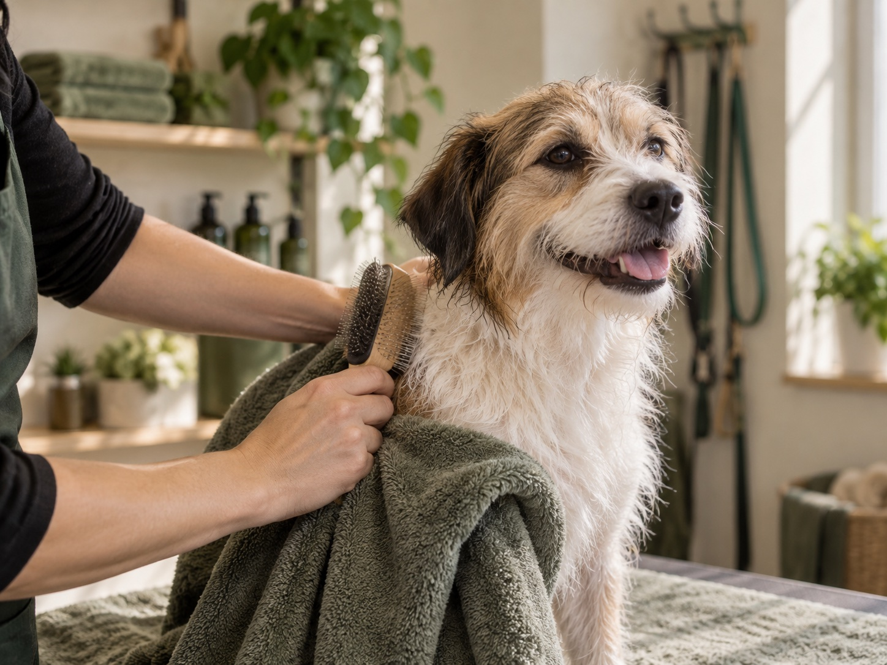

Dogs feel at ease
Owners repeatedly describe happy, relaxed dogs and Stephanie’s ability to gain their trust.
Why this alternative
Public Google reviews repeatedly describe Stephanie as friendly, professional, attentive and able to gain dogs’ trust. Owners mention relaxed, happy dogs and long-term loyalty. This concept translates those themes into a warm neighbourhood identity that feels true to the experience customers describe.
Your local groomer since 2003
Personal, professional grooming from someone Shankill dog owners return to—and dogs learn to trust.
 GOOD
GOODThe feeling customers remember
That’s the picture owners paint in public reviews: friendly conversation, careful listening, trusted hands and dogs who leave relaxed, clean and looking their best.
Owners repeatedly describe happy, relaxed dogs and Stephanie’s ability to gain their trust.
Requests are heard, useful suggestions are offered and the finish is agreed around real life.
Reviews consistently praise professional grooming, careful clipping and dogs looking and smelling great.
Themes drawn from public Google reviews viewed 15 September 2026.
Your dog’s groom
Stephanie begins with a conversation and a coat check, then recommends a breed-standard or practical style to suit your dog and your routine.
Coat, skin, ears and nails are looked over before the groom begins.
Two warm shampoos leave the coat properly clean and ready to work with.
Choose a breed-standard finish or a style that is easier to maintain at home.
Collect a fresh, comfortable dog—and hear about anything Stephanie noticed.

Meet your groomer
Stephanie Lawless has been grooming since 2003. She is City & Guilds qualified, keeps learning through professional seminars and has won recognition at the Irish Dog Grooming Championships—including Reserve Groomer of the Year in 2010.
But the clearest proof is simpler: owners say their dogs trust her, and they come back.
Talk to StephanieWhat owners notice
“A small grooming place full of love and good energy.”
Gabriela · Google review
“A fantastic way of gaining the trust of the dogs.”
Sharon · Google review
“Attentive to my requests and had good suggestions.”
Bernie · Google review
Short excerpts from public Google reviews viewed 15 September 2026.
Start with a hello
Share the basics and Stephanie can follow up to discuss the right groom, timing and price.
A familiar place in Shankill
09:00–13:00